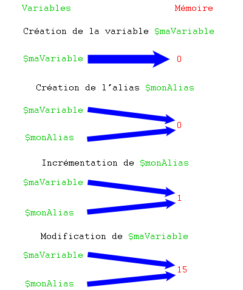
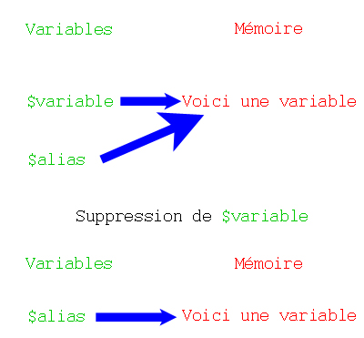

Bonjour et bienvenue dans ce tutoriel où vous découvrirez de nouvelles notions concernant les variables en PHP. En effet, vous avez encore beaucoup à apprendre si vous venez de terminer le cours de M@teo21. ;)
Attaquons la première partie de ce mini-tutoriel. Je vais ici vous parler des références. Si vous avez des connaissances en C++ (ou peut-être d'autres langages utilisant les références), je ne vous apprendrai rien, passez à la sous-partie suivante (vous verrez en fait dans la dernière partie une des principales différences entre les références de PHP et les références du C++). ;)
Une référence n'est rien d'autre qu'une variable pointant sur une autre : elle devient un alias de la variable sur laquelle elle pointe. Si vous modifiez l'une de ces variables, les deux prendront la même valeur. Lors de la déclaration d'une référence, on fait précéder le nom de la variable à référencer d'un & ; et ce uniquement lors de sa déclaration.
Un exemple :
<?php
$maVariable = 0;
$monAlias = &$maVariable; // $monAlias pointe sur $maVariable : si on modifie l'une de ces deux variables, l'autre sera elle aussi modifiée.
$monAlias++;
echo $maVariable . ' - ' . $monAlias; // Affiche « 1 - 1 ».
$maVariable = 15;
echo $maVariable . ' - ' . $monAlias; // Affiche « 15 - 15 ».
?>
Quand je dis que $monAlias pointe sur $maVariable, ce n'est pas tout à fait exact. C'est ce qu'on dit, mais ce n'est pas ce que fait le serveur. Voici ce qui s'est passé durant le script :
mise en mémoire de la valeur de $maVariable et association de cette valeur à la variable $maVariable ;
création de la variable $monAlias qui pointe sur la valeur précédemment créée et non sur la variable $maVariable ;
incrémentation de la valeur de $monAlias qui est la même que $maVariable ;
modification de la valeur de $maVariable qui est la même que $monAlias.
Schématiquement, il s'est passé ceci :

C'est bien beau tout ça, mais vous pouvez faire mieux : passer une variable à une fonction en tant que référence. Voici comment faire :
<?php
function additionne (&$param1, $param2) // Le premier paramètre sera une référence
{
$param1 += $param2;
}
$var1 = 10;
$var2 = 20;
additionne ($var1, $var2); // c'est une référence de $var1 qui est passée, et non sa valeur
echo $var1; // Affiche « 30 ».
?>
Tant qu'on y est, j'ouvre une petite parenthèse sur le passage de références en paramètres de fonctions. Sachez que si la fonction que vous appelez attend une référence en paramètre, vous n'êtes pas obligé d'initialiser la variable que vous lui donnez. Lorsque l'on déclare une fonction avec des références en paramètres, le serveur va initialiser les symboles (variables) à NULL et attendre des valeurs (le nombre de symboles qu'il initialise est le nombre de références en paramètres). Si on passe une variable non déclarée à une fonction en paramètre, elle vaut NULL. Sans référence, le PHP n'aime pas car la variable n'est pas déclarée. Mais avec une référence, il ne s'intéresse qu'à la valeur qu'il va modifier.
Ainsi, un code comme celui-ci émettra une notice :
<?php
function initialisation (&$var1, $var2)
{
$var1 = 'Variable 1';
$var2 = 'Variable 2';
}
// Notez que le fait que ces variables aient le même nom que les paramètres de la fonction n'a aucune importance.
initialisation ($var1, $var2); // Erreur E_NOTICE levée car $var2 n'existe pas.
?>
Mais celui-là, non :
<?php
function initialisation (&$var1, &$var2)
{
$var1 = 'Variable 1';
$var2 = 'Variable 2';
}
initialisation ($var1, $var2); // Les deux variables sont passées en tant que référence, donc aucun problème.
?>
Retourner une référence
Vous pouvez passer des références en paramètre à une fonction, mais vous pouvez aussi retourner une référence.
Pour retourner une référence, vous devez précéder le nom de la fonction d'un & quand vous la déclarez et quand vous l'appelez.
Voici un exemple :
<?php
class MaClasse
{
public $attribut = 'Voici un attribut';
public function &recupererAttribut() // Notez le symbole & juste avant le nom de la fonction : ça veut dire que cette fonction renverra une référence.
{
return $this->attribut; // Que je ne vous surprenne jamais en train de faire précéder votre variable de retour d'un & !
}
}
$monObjet = new MaClasse();
$variable = &$monObjet->recupererAttribut(); // Notez le symbole & juste avant le nom de la fonction (et, dans ce cas, de mon objet).
$monObjet->attribut = 'Voici un attribut modifié'; // On modifie l'attribut de l'objet.
echo $monObjet->attribut . ' - ' . $variable; // Affiche « Voici un attribut modifié - Voici un attribut modifié ».
?>
Passer une référence dans un foreach
Voilà une possibilité très intéressante que nous propose le PHP. Vous pouvez passer une référence à la variable courante d'une boucle foreach.
Imaginons que je crée un tableau contenant plusieurs mots et que je veux rajouter, à la fin de chaque mot, un pipe. Comment faire ? Comme ça :
<?php
$texte = 'Voici du texte que l\'on va essayer de transformer.';
$tableau = explode (' ', $texte); // Transformation de la chaîne en tableau.
foreach ($tableau as $valeur) // Parcours du tableau.
$valeur .= '|'; // Ajout d'un pipe à la fin de la valeur.
echo '<pre>' . print_r ($tableau, true) . '</pre>';
/*
Affiche :
Array
(
[0] => Voici
[1] => du
[2] => texte
[3] => que
[4] => l'on
[5] => va
[6] => essayer
[7] => de
[8] => transformer.
)
*/
?>
Comme vous vous en doutiez, non ? ^^ Vous êtes censé comprendre ce code et pourquoi il ne fonctionne pas. Si vous ne voyez pas, je ne vais pas vous le dire, à vous d'aller relire la partie concernant le parcours d'un tableau avec foreach.
Comment faire pour que ce code fonctionne ? En faisant appel aux références bien sûr ! (Comme c'est étrange. :-° )
<?php
$texte = 'Voici du texte que l\'on va essayer de transformer.';
$tableau = explode (' ', $texte); // Transformation de la chaine en tableau.
foreach ($tableau as &$valeur) // Notez le signe & : $valeur n'est pas une simple variable, c'est une référence pointant sur la valeur du champ courant !
$valeur .= '|'; // Ajout d'un pipe à la fin de la valeur.
echo '<pre>' . print_r ($tableau, true) . '</pre>';
/*
Affiche :
Array
(
[0] => Voici|
[1] => du|
[2] => texte|
[3] => que|
[4] => l'on|
[5] => va|
[6] => essayer|
[7] => de|
[8] => transformer.|
)
*/
?>
Et voilà, pas plus simple, un petit & de plus, et le tour est joué. ^^
Effets secondaires
Il y a quelque chose que je me dois de vous dire. Pour commencer, testez ce code :
<?php
$a = array (1, 2, 3);
foreach ($a as &$b) {} // Notez la référence.
foreach ($a as $b) {} // Notez l'absence de référence.
print_r ($a);
?>
À l'écran, s'affiche :
Citation : Résultat
Array ( [0] => 1 [1] => 2 [2] => 2 )
En observant le résultat qui s'affiche, vous voyez que la dernière valeur a été écrasée par la précédente. Pour remédier à ce problème, il vous suffit de changer le nom de la variable dans la deuxième boucle. Ainsi, votre tableau sera intact. Faites donc très attention quand vous utilisez les références dans un foreach.
Comme vous l'avez vu, les références, c'est cool, mais au bout d'un moment ça devient assez lourd. :-°
Avant d'aller plus loin, définissons ce qu'est une variable locale. Une variable locale est une variable déclarée dans une fonction. Une fois la fonction terminée, la variable est détruite. Soit ce code :
<?php
function modifierChaine()
{
$chaine = 'Salut !';
}
$chaine = 'Hello !';
modifierChaine();
echo $chaine; // La variable $chaine, créée dans la fonction modifierChaine(), est dite locale à cette fonction ; la variable $chaine créée 2 lignes plus haut n'est donc pas modifiée, donc à l'écran s'affichera « Hello ! ».
?>
Imaginons que vous ayez un tableau $configuration que vous incluez dans toutes vos pages. Ce tableau contient diverses informations concernant la configuration de votre site.
Un problème se pose, maintenant : vous avez une fonction afficherNews() qui aura pour rôle d'afficher les news (jusque là, ça va :p ). Dans votre tableau $configuration se trouve une entrée nommée nombre_de_liens_par_page contenant un nombre (par exemple 10). Comment accéder à ce nombre depuis votre fonction ? On a vu plus haut que l'on ne pouvait faire comme on l'aurait fait intuitivement. Il suffit d'utiliser le tableau associatif $GLOBALS .
Ce tableau contient toutes les variables de votre script. Si vous créez une variable, elle sera automatiquement disponible dans le tableau $GLOBALS .
Si l'on reprend le code du haut en le modifiant de telle sorte que ça fonctionne, il ressemblerait à ceci :
Réalisons maintenant un compteur de requêtes MySQL. Logiquement, le code ressemblerait à ça :
<?php
$nombreDeRequetes = 0;
function requete ($sql)
{
$GLOBALS['nombreDeRequetes']++;
return mysql_query ($sql);
}
requete ('SELECT * FROM membres');
requete ('SELECT * FROM membres');
requete ('SELECT * FROM membres');
requete ('SELECT * FROM membres');
echo $nombreDeRequetes; // Affiche « 4 ».
?>
Au lieu d'utiliser cette technique, vous pouvez accéder à cette variable déclarée en dehors de la fonction en faisant précéder son nom du mot-clé global. Regardez ce code :
<?php
function requete ($sql)
{
global $nombreDeRequetes; // On fait précéder $nombreDeRequetes par le mot-clé global : le serveur va chercher la variable $nombreDeRequetes en dehors de la fonction.
$nombreDeRequetes++;
return mysql_query ($sql);
}
$nombreDeRequetes = 0;
requete ('SELECT * FROM membres');
requete ('SELECT * FROM membres');
requete ('SELECT * FROM membres');
requete ('SELECT * FROM membres');
echo $nombreDeRequetes; // Affiche « 4 ».
?>
Je crois que vous savez tout (ou presque :p ) sur les variables globales. :)
Je vais maintenant vous expliquer ce qu'est une variable statique. Lorsque vous déclarez une variable dans une fonction, cette variable n'est définie que dans celle-ci (c'est ce qu'on a vu plus haut) : c'est une variable locale. Pour pallier ce problème, vous pouvez la rendre statique. Dans ce cas, la variable sera préservée et la variable locale retrouvera sa valeur lors d'un nouvel appel à la fonction.
Un exemple sera plus parlant :
<?php
function incrementation()
{
static $i = 0; // Si c'est le premier appel de la fonction, initialisation de la variable.
$i++;
echo $i;
}
incrementation(); // Affiche « 1 ».
incrementation(); // Affiche « 2 ».
incrementation(); // Affiche « 3 ».
incrementation(); // Affiche « 4 ».
incrementation(); // Affiche « 5 ».
?>
Retourner une référence d'une variable statique
Si vous avez bien suivi, une variable statique n'est détruite qu'à la fin de votre script et non à la fin de la fonction comme le serait une variable locale (« normale »). Puisque cette variable n'est pas détruite et qu'elle conserve sa valeur, il devrait être possible d'y accéder n'importe quand. Et c'est possible, grâce aux références !
Je vous ai montré plus haut comment retourner la référence d'un attribut. La syntaxe est la même pour retourner une référence vers une variable statique :
<?php
function &maFonction ($afficher = false) // N'oubliez pas le symbole & avant le nom de la fonction.
{
static $variable = 'Voici une variable';
if ($afficher)
echo $variable;
return $variable; // Ne mettez surtout pas de & avant le nom de la variable !
}
function modifierChaine (&$variable) // On attend une référence en argument.
{
$variable = 'Voici une variable modifiée';
}
$alias = &maFonction(); // $alias est un alias de la variable statique $variable.
modifierChaine ($alias);
maFonction (true); // Affiche « Voici une variable modifiée ».
?>
Derrière ce nom un peu barbare qu'est le mot cast, se cache une notion assez simple et intuitive.
Commençons par définir ce que veut dire caster. Pour faire simple, caster signifie changer le type d'une variable. Vous pouvez ainsi changer une variable de type int (integer, soit entier en français) en une variable de type string (chaîne de caractères).
Pour effectuer un cast (un changement de type), il suffit de faire précéder la variable à caster du type dans lequel doit être retourné le résultat.
Un cast s'effectue comme suit :
<?php
$chaineDeCaracteres = '12'; // Variable de type string.
$nombre = (int)$chaineDeCaracteres;
?>
Ce code est assez intuitif. Sachez que l'on peut effectuer un cast sur autre chose qu'une variable. Exemple :
Pourquoi 27 ? Pourquoi pas 28.1 comme on pourrait penser ? Tout simplement parce qu'on a changé le type des nombres 12.5 et 15.6. Après ce cast, ces deux nombres à virgule ne sont plus de type float mais de type int ce qui fait qu'ils ne valent plus 12.5 et 15.6 mais 12 et 15.
Si vous avez suivi le tutoriel de M@teo21, vous devriez connaître ces opérateurs de comparaison :
== (égal) ;
!= (différent de) ;
< (plus petit que) ;
> (plus grand que) ;
<= (inférieur ou égal à) ;
>= (supérieur ou égal à).
Dans cette partie, je vais vous faire découvrir ceux-là :
=== (strictement égal, ou identique) ;
!== (strictement différent).
Ces deux symboles vérifient les valeurs qu'on leur demande de comparer, mais aussi leur type.
L'opérateur égal (==) compare les deux valeurs qu'on lui demande sans se soucier de leur type. Si vous décidez de comparer une chaîne de caractères et un entier, alors la chaîne de caractères sera convertie en entier.
Avec l'opérateur égal (==), toute chaîne de caractères vaut true , ainsi que tous les nombres décimaux — sauf 0 qui vaut false (0 en tant que nombre entier mais aussi en tant que chaîne de caractères).
<?php
if ('voici une chaine de caractères' == true)
echo 'Vrai';
else
echo 'Faux';
?>
Les pièges de la conversion
Vous venez de voir qu'en PHP, 1 == true et 0 == false. Vous venez aussi de voir que lorsqu'on compare une chaîne de caractères à un nombre, celle-ci est convertie en entier. Ainsi, si je compare 'azerty' à 0, la condition renverra true. Mais si je compare 'azerty' à true, la condition renverra aussi true car quand on compare une chaîne de caractères à un booléen, celle-ci n'est pas convertie en entier !
<?php
$chaine = 'azerty';
if ($chaine == 0) // Affiche « Vrai » car 'azerty' en entier donne 0.
echo 'Vrai';
else
echo 'Faux';
if ($chaine == false) // Affiche « Faux » car toute chaine de caractères vaut true.
echo 'Vrai';
else
echo 'Faux';
if ($chaine == 1) // Affiche « Faux » car 'azerty' en entier donne 0.
echo 'Vrai';
else
echo 'Faux';
if ($chaine == true) // Affiche « Vrai » car toute chaine de caractères vaut true.
echo 'Vrai';
else
echo 'Faux';
?>
Quand on convertit une chaîne de caractères en entier, et que cette chaîne commence par un nombre, la nouvelle valeur de la chaîne sera ce nombre sous forme d'entier.
<?php
$chaine = '1azerty'; // Notez bien le 1 en début de chaîne.
if ($chaine == 0) // Affiche « Faux » car '1azerty' en entier donne 1.
echo 'Vrai';
else
echo 'Faux';
if ($chaine == false) // Affiche « Faux » car toute chaîne de caractères vaut true.
echo 'Vrai';
else
echo 'Faux';
if ($chaine == 1) // Affiche « Vrai » car '1azerty' en entier donne 1.
echo 'Vrai';
else
echo 'Faux';
if ($chaine == true) // Affiche « Vrai » car toute chaîne de caractères vaut true.
echo 'Vrai';
else
echo 'Faux';
?>
Piège : les différentes notations
Voici un piège très vicieux. Il existe, dans le monde de l'informatique, différentes notations : la notation décimale (10 symboles, de 0 à 9, celle que nous utilisons tout le temps), la notation hexadécimale (16 symboles, de 0 à 9 et de A à F), la notation octale (8 symboles, de 0 à 7)... Il y a d'autres notations (comme le binaire par exemple), mais je n'en parlerai pas. ;)
Pour dire d'un nombre qu'il est décimal, on déclare la variable normalement. Pour dire que le nombre est hexadécimal, on précède le nombre d'un 0 et d'un x. Pour dire que le nombre utilise la notation octale, on précède le nombre d'un 0. Exemple :
<?php
$nombreDecimal = 159; // Nombre décimal.
$nombreHexadecimal = 0xAE46AF; // Nombre hexadécimal.
$nombreOctal = 0257; // Nombre octal.
?>
Euh super, et où veux-tu en venir ?
Ce que je veux vous dire, c'est que le nombre 54 en base 10 (nombre décimal à 10 symboles) n'a pas la même valeur que le nombre 54 en base 8 (nombre octal à 8 symboles). Je vous conseille vivement ce tutoriel si vous voulez en savoir plus sur les différentes notations.
Et un exemple qui illustre les différents effets qui peuvent surprendre :
<?php
if (54 == 054) // Affiche « Faux ».
echo 'Vrai';
else
echo 'Faux';
if (54 == 0x54) // Affiche « Faux ».
echo 'Vrai';
else
echo 'Faux';
if (303 == 0457) // Affiche « Vrai » car 303 (nombre décimal) donne 457 (nombre octal) !
echo 'Vrai';
else
echo 'Faux';
if (2786 == 0xAE2) // Affiche « Vrai » car 2786 (notation décimale) donne AE2 en hexadécimal !
echo 'Vrai';
else
echo 'Faux';
?>
Les opérateurs stricts
Intéressons-nous maintenant aux opérateurs dits stricts car ils vérifient les deux valeurs mais aussi leur type.
Ainsi, deux valeurs de types différents ne seront jamais strictement identiques.
Ce code affichera donc Faux car 0 est un entier et false est un booléen.
Exemple concret : utilisation de la fonction strpos()
Cette fonction retourne la position numérique de la première occurrence de la chaîne recherchée dans la chaîne de caractères donnée. Si la chaîne n'est pas trouvée, la fonction renvoie false .
Par exemple :
<?php
$chaine = 'Voici une chaîne de caractères.';
$position = strpos ($chaine, 'cha');
echo $position; // Affichera 10.
?>
Maintenant, imaginons que je voulais rechercher la chaîne 'Vo'. strpos() m'aurait retourné 0 en tant qu'entier. Si je veux comparer cette valeur, il faut utiliser l'opérateur strictement égal, ou identique. Sinon, si la chaîne n'est pas trouvée, ma condition peut renvoyer true , ce qui n'est pas l'effet désiré.
Exemple :
<?php
$chaine = 'Voici une chaîne de caractères.';
if (strpos ($chaine, 'Vo') == 0) // Renvoie true.
echo 'Vrai';
else
echo 'Faux';
if (strpos ($chaine, 'azerty') == 0) // Renvoie true, car 0 == false !
echo 'Vrai';
else
echo 'Faux';
?>
Le code, comme vous pouvez le constater, ne fonctionne pas correctement. Le code fonctionnel serait le suivant :
<?php
$chaine = 'Voici une chaîne de caractères.';
if (strpos ($chaine, 'Vo') === 0) // Renvoie true.
echo 'Vrai';
else
echo 'Faux';
if (strpos ($chaine, 'azerty') === 0) // Renvoie false.
echo 'Vrai';
else
echo 'Faux';
?>
Et voilà le travail. :)
Je ne vais pas m'étendre sur l'opérateur strictement différent (!==) car son fonctionnement est le même que l'opérateur identique (===).
Une condition avec cet opérateur renvoie true si l'une des deux valeurs n'est pas la même ou si les deux valeurs ne sont pas du même type.
Exemple :
<?php
if ('0' !== 0) // Renvoie true car l'une des valeurs est de type string et l'autre est de type int.
echo 'Vrai';
else
echo 'Faux';
?>
Nous avons vu plus haut ce qu'est une variable de type string : c'est une chaîne de caractères.
Si votre variable est de type string, alors vous pouvez accéder à chacun de ses caractères en spécifiant entre crochets la position du caractère recherché.
Soit le code suivant :
<?php
$chaine = 'Bonjour les Zér0s !';
echo $chaine[3];
?>
À l'écran, s'affichera j car la première lettre est à l'indice 0, comme les tableaux !
Pendant qu'on y est, voici une petite « astuce » :
<?php
if (isset ($mot[x]))
echo 'String supérieur à x caractère(s)';
else
echo 'String inférieur à x caractère(s)';
?>
Si vous avez bien suivi, vous devriez comprendre ce code. Dans ce code, on regarde si la variable comporte bien un caractère à l'indice x. Si tel est le cas, alors on peut dire que la variable comporte au moins x caractère(s). À l'inverse, si la variable ne contient pas de caractère à l'indice x, on peut en déduire que son nombre de caractères est inférieur à x caractère(s).
Vous devriez être capable de reproduire ce code avec la fonction strlen() .
<?php
if (strlen ($mot) > x)
echo 'String supérieur à x caractère(s)';
else
echo 'String inférieur à x caractère(s)';
?>
Voilà, c'est tout ce que j'avais à dire sur les chaînes de caractères en complément du tutoriel de M@teo21. :)
Voici les principales fonctions concernant les variables. Parmi elles, vous connaissez sûrement la fonction isset() qui permet de tester l'existence d'une variable. Dans la même famille, on peut citer unset(). Prototype :
Vous pouvez appeler unset() en mettant la variable à détruire en premier paramètre. Comme l'annonce le prototype, vous pouvez envoyer à cette fonction autant de variables que vous le souhaitez, et de n'importe quel type (le mot-clé mixed suivi de la variable indique que celle-ci peut être de tout type). ;)
Flashback sur les références
Je fais un petit retour sur les références. Pourquoi ? Car je viens de vous présenter la fonction unset() qui supprime une variable. Beaucoup d'entre vous pourront penser qu'un code comme celui-là ne peut fonctionner correctement :
<?php
$variable = 'Voici une variable';
$alias = &$variable;
unset ($variable);
echo $alias; // Selon vous, $alias n'affichera rien je me trompe ?
?>
Eh bien si, $alias affichera « Voici une variable » ! Pourquoi ? Après tout, c'est vrai, pourquoi elle affiche ça ? $alias pointe sur $variable qui est détruite… En PHP, une valeur n'est pas effacée de la mémoire tant qu'il y a au moins un symbole qui l'y associe. En gros, la valeur Voici une variable est associée par les symboles $variable et $alias. Donc si je supprime $variable, la variable $alias conserve sa valeur. ;)
Histoire que ce soit bien clair, je vais vous montrer un magnifique schéma fait maison :

Comme montré dans le schéma, au début, $variable et $alias pointaient sur la même valeur. On supprime l'une des deux variables, mais l'autre continue de pointer sur l'ancienne valeur que PHP n'a pas supprimée car une variable pointe toujours dessus. ;)
Vérifier le type d'une variable
Pour vérifier le type d'une variable, vous pouvez appeler la fonction is_*. Cette fonction renvoie un booléen. Bien sûr, il n'existe pas de fonction is_*, mais is_bool(), is_int(), is_string() etc.
Toutes ces fonctions renvoient un booléen. Exemple :
Voici une fonction très utile. Elle permet de forcer une variable à être un nombre entier. Si la variable est une chaîne, sa nouvelle valeur sera 0, sauf si cette variable commence par un nombre, auquel cas c'est ce nombre qui sera gardé. Cette fonction est souvent utilisée dans les requêtes SQL comme celle-ci :
<?php
$retour = mysql_query ('SELECT * FROM membres WHERE id = ' . intval ($_GET['id']));
?>
Cette fonction accepte en paramètre tout type de variable (mixed). Son rôle est de tester la valeur de la variable passée en paramètre. Si sa valeur est nulle, empty renvoie true, sinon elle renvoie false.
Un exemple :
<?php
$var1 = 'Hello world !';
$var2 = null;
if (empty ($var1))
echo 'La valeur de $var1 est nulle';
if (empty ($var2))
echo 'La valeur de $var2 est nulle';
?>
Ce petit code affichera uniquement « La valeur de $var2 est nulle ».
Le tutoriel s'arrête ici. J'espère vous avoir fait découvrir quelques petites astuces concernant les variables en PHP. ;)